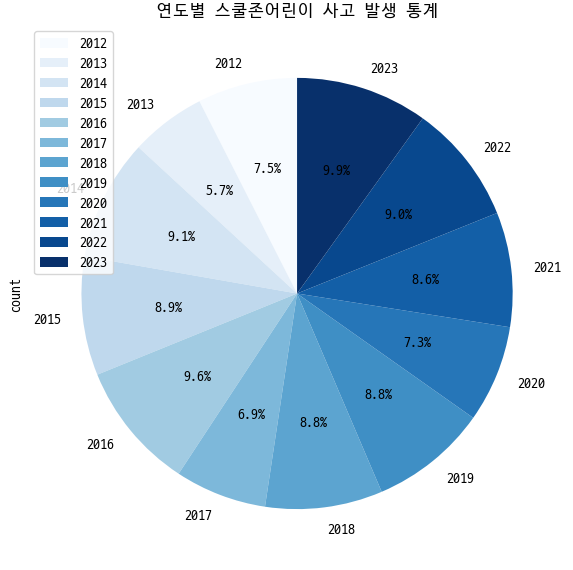

본 분석은 공공데이터포털에서 제공하는
"전국 교통사고 다발지역 표준데이터"를 기반으로
하였습니다.
사고 유형별 발생 건수와 각 유형에 대한 연도별 추이를 시각적으로
분석하였습니다.
다음 파이차트는 전체 데이터를 사고 유형별로 집계한 결과입니다.
각 사고 유형에 대해 연도별 사고 건수를 시각화한 파이차트입니다.

본 시각화를 통해 특정 사고 유형의 비중과 연도별 추이를 한눈에 파악할 수
있습니다.
이를 바탕으로 향후 교통안전 대책 수립 및 정책 결정에 활용될 수 있습니다.